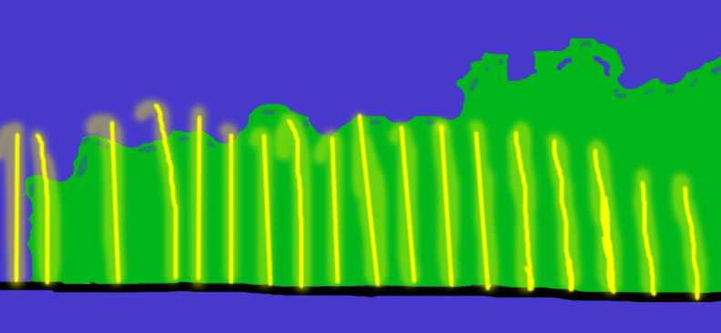
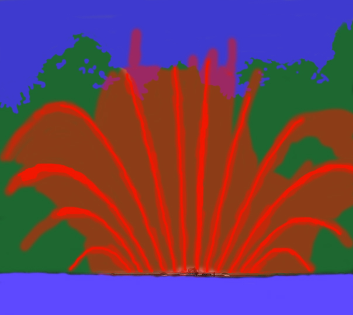
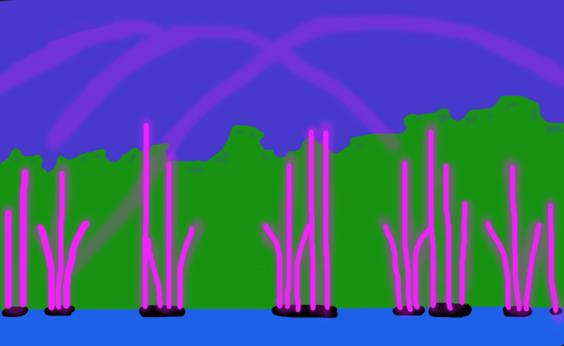

Плаваюча конструкція
Фонтан побудований на спеціальній платформі, що розташована на поверхні річки
Південний Буг. Це дозволяє зберігати природний плин води, не впливаючи на екосистему річки.

Високі водяні струмені
Водяні струмені фонтану можуть досягати висоти до 70 метрів, що робить його одним з
найбільших фонтанів Європи за цим параметром.

Світлові шоу
Фонтан обладнаний сучасними LED-прожекторами, які можуть змінювати кольори,
створюючи вражаючі світлові ефекти. Ввечері на набережній проводяться спеціальні шоу зі світлом та
музикою.

Музичний супровід
Фонтан працює у супроводі музичних композицій, що додає магії та атмосфери кожному
шоу.

Водяний екран
Особливою технологією створюється водяний екран, на якому під час шоу
відображаються лазерні проекції та відео. Це додає ефекту вражаючих візуальних шоу на воді.

Технічні параметри
Довжина — 97 м.
Ширина — 10 м.
Розліт води по фронту — 140 м.
Потужність водяних насосів — 780 кВт.
Кількість підводних ліхтарів — 560 шт.

Однією з найяскравіших особливостей фонтану Roshen є його тематичні програми та шоу, які захоплюють глядачів вражаючими візуальними і музичними ефектами. Кожна програма має свій унікальний сюжет, поєднуючи водяні, світлові та лазерні проекції.
Під час трансляції вечірньої шоу-програми демонструється
світло-музично-водяне шоу з
використанням музики відомих композиторів сучасності та класики.
- Вольфганг Амадей Моцарт. «Симфонія № 40»
- Антоніо Вівальді. «Пори року: Літо»
- Густав Голст. «Планети»
- та інші
Ці шоу підкреслюють багатогранність фонтану Roshen, перетворюючи його у
центр культурних подій міста.